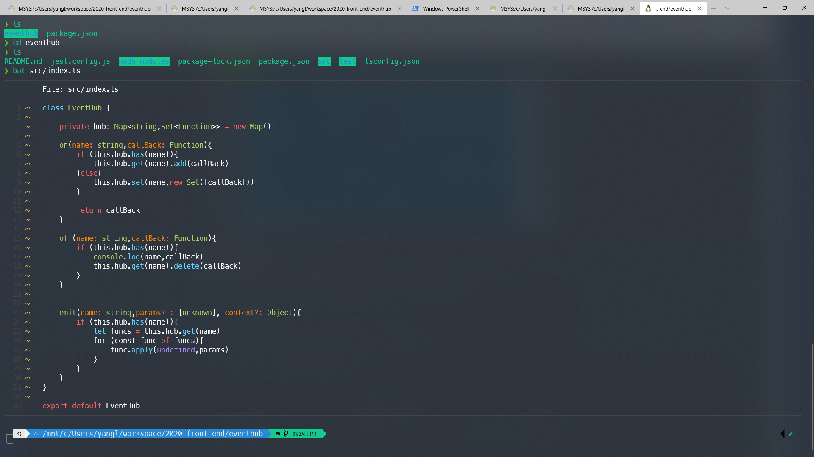

前言 自己之前在Windows一直使用cmder 作为自己的终端使用，主要就是自带颜值比git-bash这些高很多，不过在把Windows升级到1909版本，cmder不知为何无法连接到wsl 了, 正好也想试试微软新出的Windows Terminal
下载安装 直接在应用商店 里安装就可以了
个性化Windows Terminal 默认的Windows Terminal各个终端都是默认样式，劝退级别233。点击下拉菜单，点击设置就会打开Vscode来自己配置Windows Terminal了
添加新的终端需要在profiles属性下添加，类似下面这样
1 2 3 4 5 6 7 8 9 10 11 12 13 14 15 16 17 18 19 { "guid" : "{156bea93-de01-48ff-bce0-860cc70a73d5}" , "background" : "#282c34" , "closeOnExit" : true , "colorScheme" : "Chester" , "commandline" : "\"%PROGRAMFILES%\\git\\usr\\bin\\bash.exe\" -i -l" , "cursorColor" : "#FFFFFF" , "cursorShape" : "bar" , "fontFace" : "Consolas" , "fontSize" : 12 , "historySize" : 9001 , "icon" : "%SystemDrive%\\Program Files\\Git\\mingw64\\share\\git\\git-for-windows.ico" , "name" : "Bash" , "padding" : "10, 10, 10, 10" , "snapOnInput" : true , "startingDirectory" : "%USERPROFILE%" , "useAcrylic" : true , "acrylicOpacity" : 0.85 }
想要终端变得好看，配色是第一步，可以去iTerm2-Color-Schemes 上找一个自己喜欢的主题，复制windowsterminal同名文件的内容到schemes，比如我选择的Chester
1 2 3 4 5 6 7 8 9 10 11 12 13 14 15 16 17 18 19 20 21 { "name" : "Chester" , "black" : "#080200" , "red" : "#fa5e5b" , "green" : "#16c98d" , "yellow" : "#ffc83f" , "blue" : "#288ad6" , "purple" : "#d34590" , "cyan" : "#28ddde" , "white" : "#e7e7e7" , "brightBlack" : "#6f6b68" , "brightRed" : "#fa5e5b" , "brightGreen" : "#16c98d" , "brightYellow" : "#feef6d" , "brightBlue" : "#278ad6" , "brightPurple" : "#d34590" , "brightCyan" : "#27dede" , "brightWhite" : "#ffffff" , "background" : "#2c3643" , "foreground" : "#ffffff" }
把profiles中终端配置修改成对应主题名称
1 2 3 4 5 { ... "colorScheme" : "Chester" ... }
最后顺带修改一下背景颜色，微调一下透明度
1 2 3 4 5 { "background" : "#282c34" , "useAcrylic" : true , "acrylicOpacity" : 0.85 }
最后实现效果如下

这里用的是cat的升级版bat ,需要在wsl 下安装
无法出现毛玻璃特效？ 这可能是由于在系统设置中关闭了特效，可以打开设置->个性化->颜色->透明效果->启用打开毛玻璃特效，然后重新打开Windows Terminal就生效了
进入后目录不是用户目录？ 可以在执行命令后面添加这些参数，相关issues可以看这里startingDirectory setting issue for wsl profile
1 2 3 { "commandline" : "wsl.exe ~ -d Ubuntu" }
如何让wsl和windows通信？ 根据 官方文档 ,在/etc/resolv.conf中，会储存windows主机的ip地址。
1 2 3 4 nameserver 172.20.192.1
我们可以直接使用bash脚本提取它作为全局变量使用
1 2 3 4 5 6 export win_host="$(grep -oP '(?<=nameserver ) \d{1,3}(?:\.\d{1,3}){3}' /etc/resolv.conf)" echo $win_host 172.20.192.1 export http_proxy="http://${win_host} :1080" export https_proxy="http://${win_host} :1080"